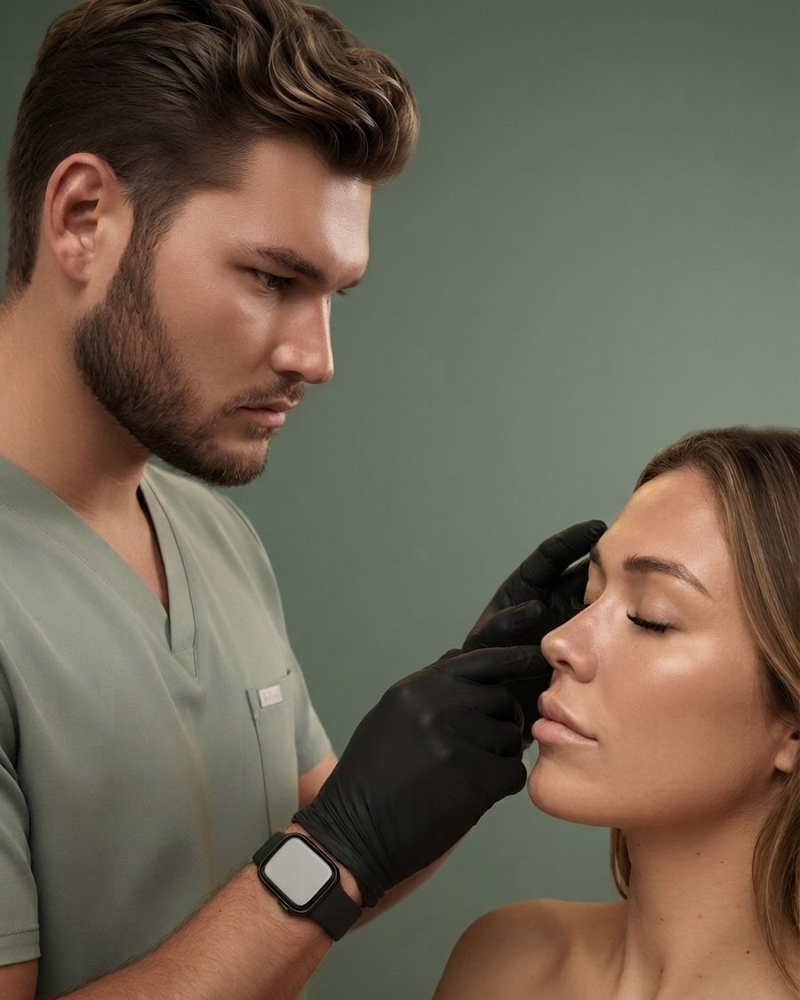

Founder & Lead Injector, Syringe Aesthetics — East Dallas, TX

Syringe Aesthetics was founded by Manuel Guillen, FNP-C, a nurse practitioner injector with more than seven years of clinical experience in aesthetic medicine. The practice is built on one principle: the face works as a whole.
Our approach is facial balancing. Rather than treating a single feature in isolation, we assess how the cheeks, chin, jaw, lips, and nose relate, then plan the smallest set of changes that bring the entire face into proportion. The result reads as balanced and rested, never done. It is an approach that has earned a following of more than 13,000, in English and in Spanish.
Every plan is individualized, built for your face and explained in full before treatment begins, with attention to how you will age, not only how you look today.
Filler and Botox planned across the whole face, not one feature at a time.
Consultations and treatment in English or Spanish.
One injector, the same provider at every visit.
Syringe Aesthetics is a BOTOX® Cosmetic and JUVÉDERM® provider and an Allē Rewards–eligible practice. Manuel Guillen, FNP-C, is a licensed Family Nurse Practitioner; all injectable and prescription treatments require an in-person consultation.